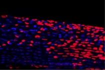
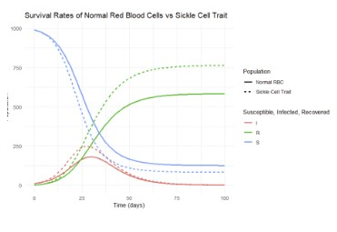
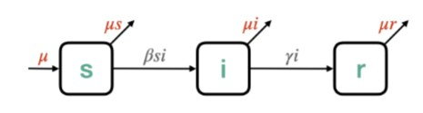

I was involved in a lab on campus over the summer which studied tendons. I assisted on a project focusing on maintaining cell viability that allowed us to perform experiments to quantify cell communication. The image above is from one experiment in which we dyed the sample to show dead and living cells. Dead cells are indicated in the red.

For a computational biology class, I researched and modeled survival trends associated with Malaria. I focused on two groups; those with sickle cell trait and those without. The graph show displays the SIR model of both populations, indicating those with sickle cell trait have a higher chance of survival.

This project is heavily related the previous one in my computational biology course, this project focuses on modeling infectious diseases using an SIR model. From different variable and compartments, it allows us to understand endemic conditions, as well as importance of vaccinations and preventions.